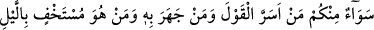
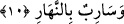

uzun olan kimse “kebîr (büyük)” diye adlandırılırsa, yokluğu muhal olan, ezelî ve ebedî
olarak devam edenin büyük olması daha uygundur.
2- O’nun varlığı, her mevcûdun varlığının kendisinden meydana geldiği bir varlıktır.
Varlığı kendi nefsi itibariyle tam olan, kâmil ve büyük oluyorsa, bütün mevcûdatın
varlığı kendisinden olan varlık, kâmil ve büyük olmaya elbette daha lâyıktır.
Kullardan büyük olan ise kemâl sıfatları sadece kendisinde kalmayıp başkalarına da
ulaşan ve meclislerinde bulunanların mutlaka kemâllerinden feyizyâb olduğu
kimselerdir. Kulun kemâli aklında, vera ve ilminde olur. Buna göre büyük, insanları
irşad eden, nurlarından ve ilimlerinden istifâde edilen bir önder olmaya elverişli, takvâ
sâhibi âlimlerden başkası değildir. Bu sebeple Hz. Îsâ şöyle buyurmuştur: “Kim bilgi
sahibi olur, bilgisiyle amel eder ve bunları öğretirse, işte o semanın melekûtunda
‘büyük’ diye çağırılır.”
“el-Müteâl” ise yüce mânâsınadır. Ancak bu kelimenin anlamında biraz mübâlağa
vardır. “el-Müteâl”, kendi rütbesinin üstünde hiçbir rütbe bulunmayan demektir. Bir
kulun, mutlak mânâda yüce olması düşünülemez. Çünkü nâil olduğu her derecenin
üstünde, şu varlık âleminde mutlaka bir derece vardır ki bu derece peygamberlerin ve
meleklerin derecesidir. Evet, kulun hiçbir insanın kendisinin üstünde olamayacağı bir
rütbeye nâil olması düşünülebilir. Bu, Peygamber Efendimiz (a.s.)’ın rütbesidir. Ne var
ki bu rütbe de mutlak yüceliğe nazaran eksiktir. Çünkü O’nun yüceliği, bâzı mevcûdâta
nisbetledir. Allah’ın yüceliği ise bütün mevcûdâta nisbetledir. Mutlak olmayan yücelik
vâcib/zorunlu değildir, aksine kendisinden daha üstün bir insan olması da imkân
dâhilindedir. Mutlak olarak yüce olan ise başkasına izâfeten değil zorunlu olarak
üstünlük kendisine âid olandır. Yine onun üstünlüğü, zıddı imkan dâhilinde olan varlığa
göre değildir.”
10. Sizden, sözü gizleyenle onu açığa vuran, geceleyin gizlenenle gündüzün
yürüyen (onun ilminde) eşittir.
“Sizden, sözü gizleyenle onu açığa vuran,” Yâni ey insanlar, Allah Teâlâ’nın ilminde
sizden sözü içinde gizli tutan da diliyle açığa vuran da eşittir.
“Geceleyin gizlenenle gündüzün yürüyen” onun ilminde “eşittir.” Aranızda
karanlıklarda gizlenen bir insan da, yollarda görünen bir insan da birdir.
Kâşifî de şöyle der: “Kim ki gizli olmak ister ve amelini kimse görmesin diye gece
gizli yapıp örtmek ister, kim de açık ve âşikâre olarak amelini gündüz yapar, yâni
mutlak olarak söz, fiil, gizli ve âşikâre hiçbir şey O’ndan örtülü değildir.